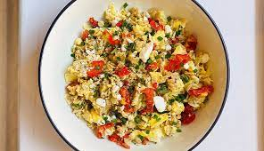

Scrambled eggs are one of the little luxuries of everyday life. When I make them, I savor every bite. They are soft and creamy, rich and flavorful, and they just so happen to cook in under 5 minutes. Seriously, how amazing is that?
If you poke around the internet in search of the best scrambled eggs recipe, you’ll find a million sites claiming to have it. Don’t be fooled – when it comes to scrambled eggs, “best” is a matter of personal taste. You can load them up with butter or sour cream, or just keep them simple like me.